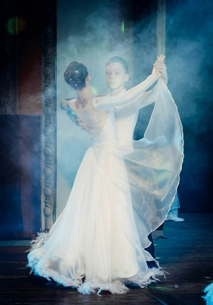
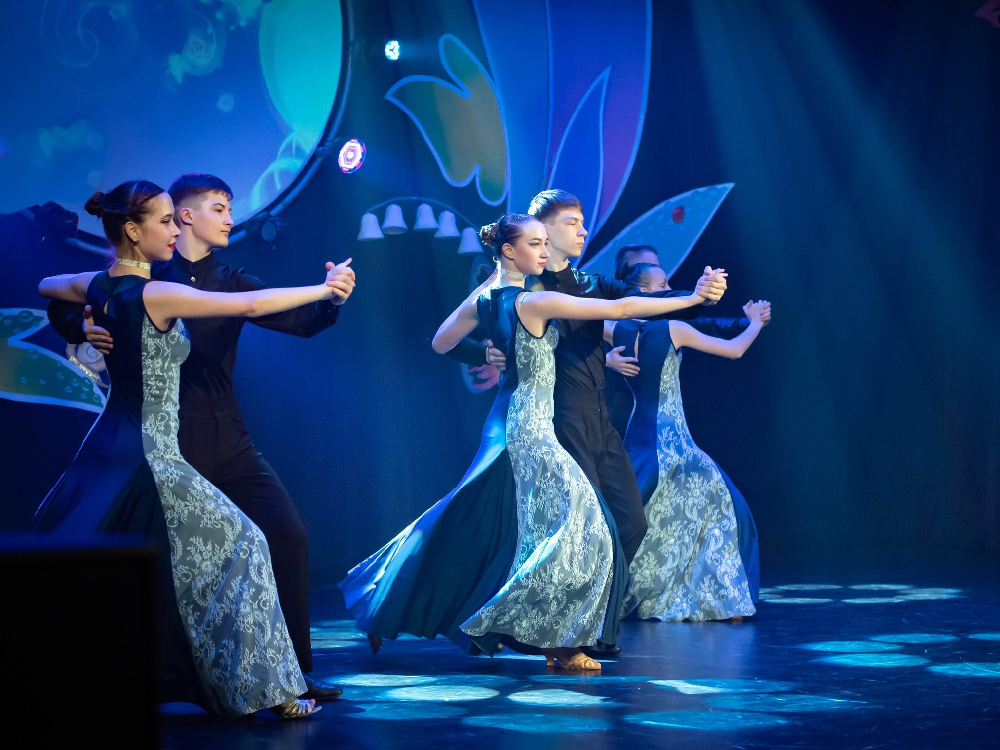
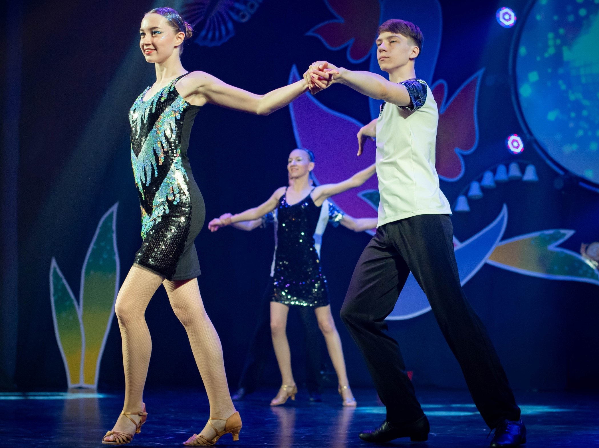
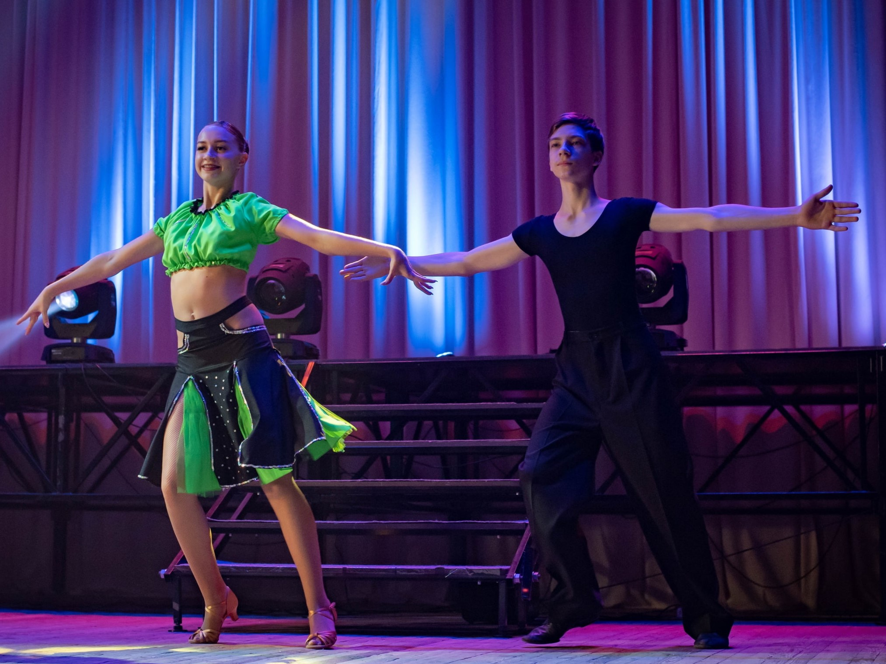

Описание
Студия создана в 2011 году. Руководитель студии - Кислова Светлана Николаевна.
Каждые три года набирается группа детей в возрасте 6-8 лет. Занятия проходят во Дворце культуры МЦБК по адерсу улица Ленина, 33 город Волжск. Спустя 2-3 года тренировок дети смогут выступать на концертах и фестивалях, проходящих на сцене Дворца, участвовать в конкурсах. соревнованиях. Также каждый год есть возможность записаться во взрослую любительскую группу для желающих от 18 лет. На занятиях комфортная, дружелюбная обстановка, руководитель находит подход к каждому.
Танцы, которые преподаются в студии:
- Самба
- Ча-ча-ча
- Румба
- Бачата
- Квикстеп
- Венский вальс
- Танго
- Медленный вальс
Фотогалерея
  